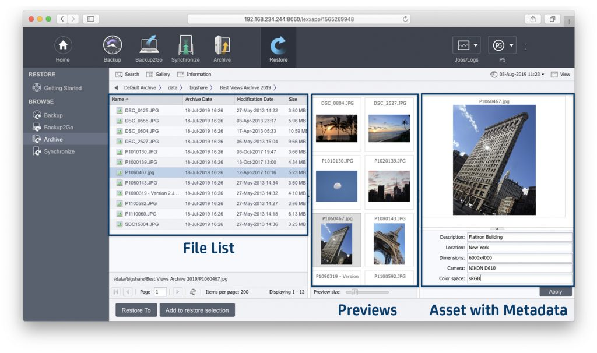
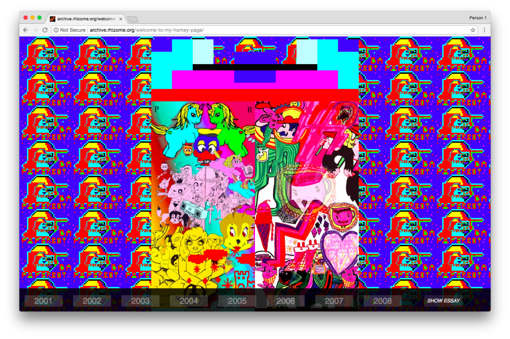
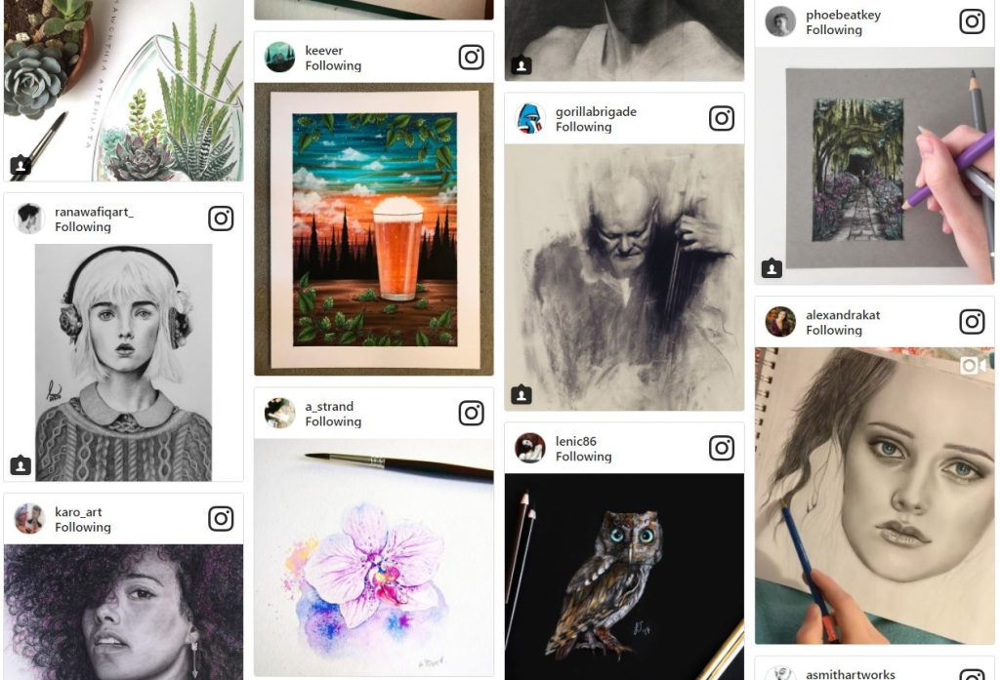

This week’s guest lecture delved into the importance of archives as a creative and curatorial approach. Drawing from years of experience in independent publishing, online art documentation, and cultural dissemination, the speaker shared how to construct contingent yet crucial cultural archives through publishing, digital platforms, and visual strategies. For me, this was not just a talk about information preservation, but a re-understanding of the role of cultural recorder.

Batschkus, M. M. (2021) What is the best way to archive video footage and media files? Archiware Blog [online]. Published 15 April 2021. Available at: Archiware Blog (Accessed: 12 March 2025)
The lecturer noted, “You can never predict whether today’s content will still hold value in a decade.” Many projects or artistic practices they documented early on, which weren’t widely regarded at the time, later became vital research documents.
For instance, one magazine issue featured pictorial interviews with net artists who refused written answers, instead responding to each question with screengrabs. This unconventional response, confusing at the time, became a mediated representation of net art language.
This made me realize: Archives aren’t always planned collections they can also be byproducts of ongoing editing and witnessing practices.
The lecturer emphasized, “Collecting is passive, while archiving is systematic organization.” The value of an archive lies not just in possession, but in usability. He noted that archiving requires:
- Categorization (Metadata): Structured labeling for retrieval.
- Contextualization: Embedding materials in their historical or cultural framework.
- Accessibility: Ensuring content is discoverable and usable.
This concept made me realize: Without systematic organization and annotation, my projects won’t be effectively understood or shared in the future. Thus, a creator’s responsibility extends beyond making work it’s also about transforming content into a knowledge structure.
The speaker began tracking and publishing early net art projects in the mid-1990s. These documents hold value not just as introductions to works, but as first-hand materials for studying net art’s evolution. He stressed that as publishers or editors, they aren’t absent external recorders but rather structural forces participating in cultural creation alongside artists.

Paper Rad (2001–2008) Example Paperrad.org composition [Online image]. Rhizome [online] (Accessed: 12 March 2025)
This made me reflect: As recorders, designers, or curators, we can equally become part of the creative process. We shouldn’t just write exhibition reviews after works are completed; instead, we should intervene in cultural contexts early, determine dissemination methods, and shape social understanding.
The speaker mentioned experimenting with integrating print publishing with Instagram strategies:
- For each new issue, they curate a set of carefully planned images and texts;
- Instead of just photographing covers, they deconstruct key terms, generate shareable visuals, and convey the publishing philosophy behind the magazine;
- Social platforms are no longer just promotion channels, but another curatorial space.

Strathmore Artist Papers (2017) Instagram art gallery example [Online image]. Available at: Strathmore Artist Papers [online] (Accessed: 12 March 2025)
This made me realize: Today’s archival practice isn’t an endpoint, but a process of repeated visibility design.
Reflection
Before this class, archives felt like collections to me quietly lying in a drawer or server. But now I realize:
- Archives can be participatory every choice to publish or withhold content is a historical judgment.
- Archives can be curatorial not about preserving original states, but constructing meaning.
- Archives can even be social acts retransmitting cultural memory through digital media.
This makes me wonder: As a creator, should I build a self-archival system for my projects? Not just showcasing finished works, but documenting processes, failed attempts, audience feedback, and unfinished fragments.